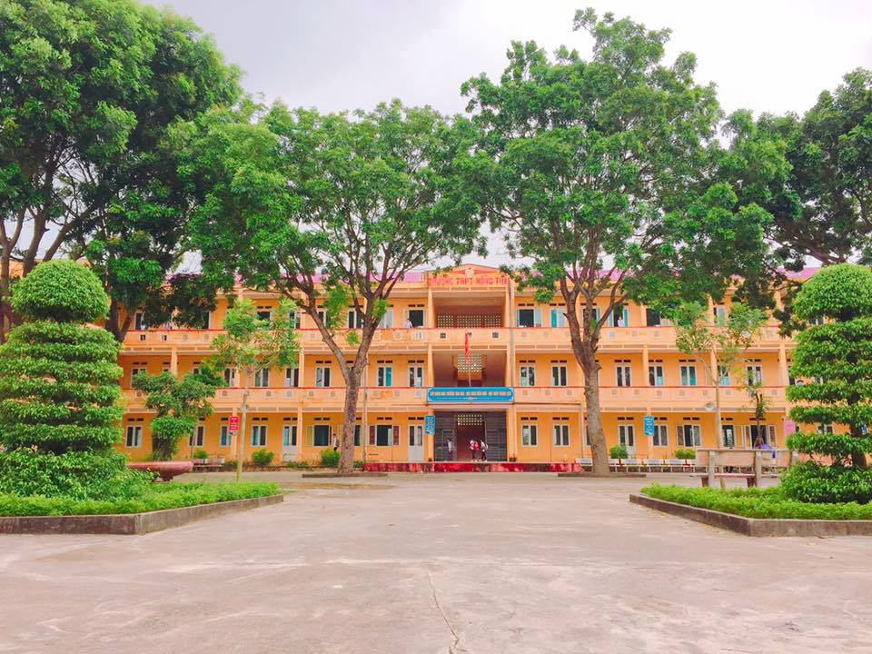
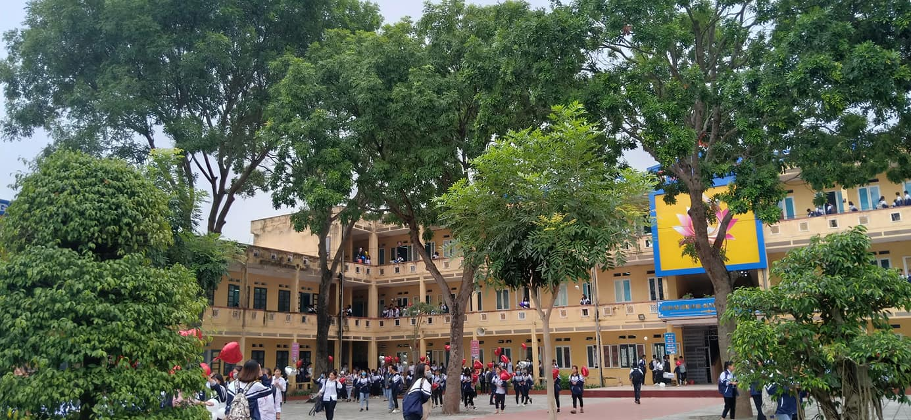

LỊCH SỬ HÌNH THÀNH VÀ PHÁT TRIỂN
Ngày 30/10/1996 trường THPT Hồng Thái được thành lập. Sự ra đời của nhà trường đã đáp ứng được nhu cầu nguyện vọng học tập của con em nhân dân các xã trong vùng. Những ngày đầu mới thành lập, nhà trường gặp muôn vàn khó khăn. Cơ sở vật chất còn nghèo nàn, thiếu thốn. Khi ấy trường chỉ là một dãy nhà cấp 4 của điểm trường Tiểu học Hồng Hà, sân trường là một khoảng đất thấp và lầy lội. Lớp học đơn sơ, hệ thống đèn điện chiếu sáng hạn chế, đời sống nhân dân và các thầy cô giáo gặp rất nhiều khó khăn. Con đường đến trường bụi mù đất đỏ khi trời nắng và lầy lội trơn trượt khi trời mưa. Song thầy và trò trường THPT Hồng Thái đã không ngừng nỗ lực vượt qua khó khăn gian khổ, tích cực thi đua dạy tốt – học tốt. Trong 23 năm qua , trường THPT Hồng Thái đã hoàn thành tốt nhiệm vụ, đào tạo hàng ngàn học sinh tốt nghiệp, đáp ứng được nhu câu học tập cấp THPT của con em các xã trong địa bàn tuyển sinh. Trải qua hơn 20 năm xây dựng và trưởng thành, nhà trường được sự quan tâm của các cấp ủy Đảng, chính quyền địa phương, các cấp, các ngành và sự ủng hộ nhiệt tình của các bậc CMHS, cơ sở vật chất của trường dần được cải thiện và trở thành ngôi trường có cơ sở vật chất hiện đại bậc nhất trong khu vực. Đến nay, trường có 36 phòng học kiên cố với đầy đủ hệ thống chiếu sáng cùng hệ thống máy chiếu, các phòng bộ môn
Trong quá trình nhà trường xây dưng, phát triển phong trào thi đua “Dạy tốt, Học tốt” của ngành luôn được duy trì. Cùng với sự đầu tư về cơ sở vật chất cho công tác dạy và học, nhà trường đã làm tốt công tác khoa học, công tác thanh tra, kiểm tra, công tác thi đua khen thưởng. Các tổ chuyên môn tổ chức duy trì sinh hoạt chuyên môn chất lượng, chú trọng xác định chuẩn kiến thức, kĩ năng, đổi mới phương pháp giảng dạy theo hướng phát triển năng lực người học, kiểm tra đánh giá, tăng cường dự giờ rút kinh nghiệm. Các kì thao giảng, hội giảng, thi giáo viên giỏi, luôn đạt giờ hiệu suất cao, xếp loại giỏi chiếm hơn 80%. Cụ thể: - Nhiều năm liền, nhà trường được Sở GD&ĐT, Thành phố tặng Bằng khen - Nhà trường vinh dự có nhiều giáo viên dự thi giáo viên giỏi Thành phố, trong đó có giải nhất cô giáo Tạ Thị Hồng Duyên; giải nhì Thầy Nguyễn Quý Dũng, cô Phạm Thị
TẦM NHÌN VÀ SỨ MỆNH
23 năm qua, nhà trường hoàn thành tốt nhiệm vụ và mục tiêu giáo dục của Đảng và Nhà nước “Nâng cao dân trí, đào tạo nhân lực, bồi dưỡng nhân tài”. Trường THPT Hồng Thái đã đào tạo bao thanh niên ưu tú cho vùng quê ven sông còn nhiều vất vả và trình độ dân trí còn thấp. Dưới mái trường này đã có nhiều thế hệ học sinh trưởng thành, đã và đang đóng góp công sức và trí tuệ vào sự nghiệp xây dựng và bảo vệ Tổ quốc. Nhiều em trong số đó đã trở thành những cán bộ công tác cơ quan Trung ương, nhiều em là Sĩ quan Quân đội, Công an nhân dân, nhiều em trở thành nhà báo, là bác sĩ, kĩ sư, có em là Giảng viên đại học, là Giám đốc của Tập đoàn lớn, cán bộ Huyện, cán bộ địa phương… Rất đáng mừng là nhiều em đã trở thành giáo viên các cấp, trở thành giáo viên của nhà trường tiếp nối sự nghiệp trồng người của các thầy cô như: cô Nguyễn Thị Hợp giáo viên môn Lịch sử, cô Nguyễn Thị Dung giáo viên Hóa… Những lớp học sinh hôm 6 nay tự hào về các anh chị đi trước, mặc dù điều kiện học tập còn khó khăn nhưng các anh chị vẫn khẳng định được mình để trở thành thủ khoa các Trường Đại học: em Hoàng Đức Hải (năm học 2004-2005) thủ hoa Học viện Quân y; em Nguyễn Thị Huyền Trang (năm học 2010- 2011) thủ khoa Hóa Đại học Sư phạm Hà Nội 1; Phạm Thị Hậu (năm học 2014-2015) thủ khoa Đại học Sư phạm Hà Nội 1; Nguyễn Thị Hồng Thảo( năm học 2017-2018) thủ khoa khối C Đại học Báo chí Tuyên truyền . Đặc biệt năm học 2018- 2019, em Nguyễn Thị Trà My - HS lớp 12A1 trở thành Thủ khoa toàn quốc khối D1 với số điểm 28,4 đ.
Trường THPT Hồng Thái ngày càng vững mạnh bởi chi bộ Đảng , Đoàn thể nhà trường là đơn vị xuất sắc. Chi bộ với 36 Đảng viên thưc sự là hạt nhân lãnh đạo nhà trường. Trong mọi hoạt động của nhà trường, Chi bộ đã thể hiện tính tiên phong, tính định hướng cho công tác nhà trường đã tạo được niềm tin của giáo viên, nhân viên, học sinh , nhiều năm liền đạt “Chi bộ hoàn thành xuất sắc nhiệm vụ”. Bên cạnh đó, Công Đoàn nhà trường luôn đạt “Công Đoàn vững mạnh”, được Liên Đoàn lao động thành phố trao bằng khen. Nhiều năm qua, Công Đoàn đã cùng nhà trường chăm lo và bảo vệ quyền lợi chính đáng của cán bộ, giáo viên, nhân viên nhà trường , cùng nhà trường tạo mối quan hệ hợp tác, tổ chức và duy trì các cuộc vận động: “ Kỷ cương, tình thương, 7 trách nhiệm”, “Học tập và làm theo tấm gương đạo đức Hồ Chí Minh” , “Mỗi thầy cô giáo là tấm gương về đạo đức, tự học và sáng tạo”, phong trào “Giỏi việc nước, đảm việc nhà”.,…
THPT HỒNG THÁI
Cụm 8 - Xã Hồng Hà - Huyện Đan Phượng - TP Hà Nội
Email: c3hongthai@hanoi.edu.vn
Điện thoại: 02433.817.259
BẢN ĐỒ CHỈ DẪN